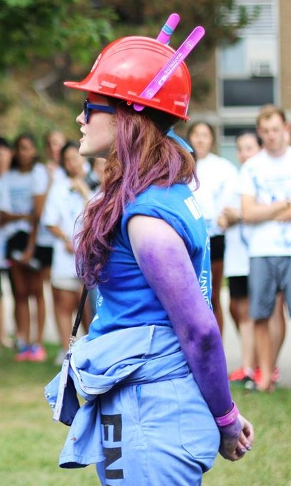

About Me
Hi!
I'm Elizabeth Morrow, a student in Mechatronics Engineering at the University of Waterloo. I have done 4 internships so far, and have focused heavily on software. Now I'd love to get lower level. My ideal internship for Fall 2016 is embedded systems or robotics.
On a personal note, I'm a bilingual Canadian who loves hockey, my dogs, and can't wait for the next episode of Game of Thrones.
You can check out my resume below, and keep scrolling to learn more about me.
Thanks for stopping by!
Co-op
Winter 2016 - Microsoft
Visual C/C++
Today at ‪#Build2016 Microsoft released what I have been working on since January:
Visual Studio C/C++ for Linux and IoT devices!
Whether you're working with OpenGL on Ubuntu, or a hardware project on a Raspberry Pi or Beaglebone, you can now leverage the full functionality of Visual Studio's toolset with a backbone of GCC and GDB. As someone who continually walks the line between Windows/Linux, I'm personally really excited about the ability to move my Raspberry Pi work into a powerful IDE.
Spring 2015 - Microsoft
Visual Studio Platform
I went through the Explorer program which allowed me to try out both Project Management and Software Engineering roles. I had a fantastic summer that culminated in winning the Intern Tech Fair!
The Goal
Along with two other Explorer interns, my mission was to bring the Visual Studio experience to an entirely new audience: Lua developers. Lua is a lightweight scripting language used primarily for game development. Our initial scope did not include debugging due to time constraints, but I felt so strongly about its necessary inclusion in the project I ended up owning it end to end.
My Project
To write a Lua debugger capable of debugging scripts embedded in large host applications, and then integrate it into VS.
As a Project Manager...
I explored the competitive landscape of Lua tooling currently available. This included trying out other IDEs as well as doing customer research on social media, asking the development community what they would like to see. I wrote a functional spec detailing the user experience associated with my feature (the debugger), and held a review with members of the Visual Studio team to gather feedback, and finally began to implement my design.
As a Software Engineer...
I hand rolled a Lua lexer to be used as the base of our language model. Then, I got to start on the debugger. This project involved me learning very quickly about IPC mechanisms, threads, COM to integrate with VS, Microsoft Detours, native C++ mutexes and events, C# and DLL Injection. I learned what now seems like a crazy amount in 16 weeks, and enjoyed every minute of it. In the end, my demo of the VS Lua debug experience included breakpoints, stepping, viewing the callstack and local variables.
The Result
Microsoft has open sourced the project as an example of extending Visual Studio to support additional scripting languages.
Check out the code!"Elizabeth is a standout leader...driven to deliver products that will most delight customers" - Mentor
"Elizabeth drove the debugger from inception to implementation. She did the functional specification, the technical specification, and wrote the code. I cannot stress enough how impressive this is, given the timeframe and technical complexity." - Manager
Fall 2014 - MedAvail Control Systems

This past coop term was incredible, I learned so much taking multiple applications from an idea to a fully functional application ready to ship. Many thanks to the Controls Team at MedAvail, this term has only made me more excited to continue to develop my skills in software design!
My Experience
I had 2 major independent projects while working at MedAvail, as well as daily testing and electrical CAD work.
The Audio Test System is written in C# and uses Fast Fourier Transforms to analyze audio signal quality and determine if a handset passes quality control. The multithreaded interface stays responsive while the calculations and analysis run in the background. Settings only have to be configured once, and they are saved and set as the new default settings the next time the program is opened.
I also designed and wrote the Embedded Log Converter in C#, a parsing application for the data packets received from the microcontrollers in the MedCentres to make them readable, and translatable. Using a hash table, the average look-up was O(1) and the converter is able to run as an extension of the Utility tools, translating in real time!
During my coop I also contributed to the Utility software suite, helping redesign the GUI using a wireframing tool called Balsamiq.
Projects
Hack The North
September 18th I'll be participating in Hack The North, hosted at the University of Waterloo. I'm planning to do a wearable hack, possibly with the Microsoft Band.
Solar Car Control System
At Midnight Sun we develop primarily in C, using CodeComposer for an IDE. Right now the main priority of the Electrical team is getting the new code and the new board revisions up and running, as we aim to compete in the World Solar Challenge in Australia.

Kik Hackathon
The weekend of January 30 - February 1 2015 I was very excited to participate in the Kik Hackathon! I'd been meaning to do some Android application development and this weekend presented the perfect opportunity. The idea was to create a voice-controlled alarm application, to set or snooze alarms using Wit.Ai and Android Studio. Currently the only ringtone option is Space Jam.
The experience was a lot of fun, I learned a lot about developing for a mobile platform, and plan to continue doing this in my spare time.
You will also find me...
Traveling
When I'm not working or in school, I love to explore new places and cultures. This term I've been hiking and skiing my way accross the Pacific North West, spending time in California, and counting down to my trip to Costa Rica in April 2016.
Volunteering
I love volunteering my time as an Engineering Society Commissioner, Director, and Orientation Week Leader. My experience with getting involved in my community has always been extremely positive, whether it's at school or in the workplace.
Competing
I've been a provincial champion in rugby, field lacrosse, and hockey. These days I spend any spare time I have rock climbing, skiing, or in the gym.